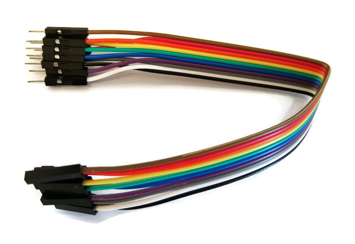
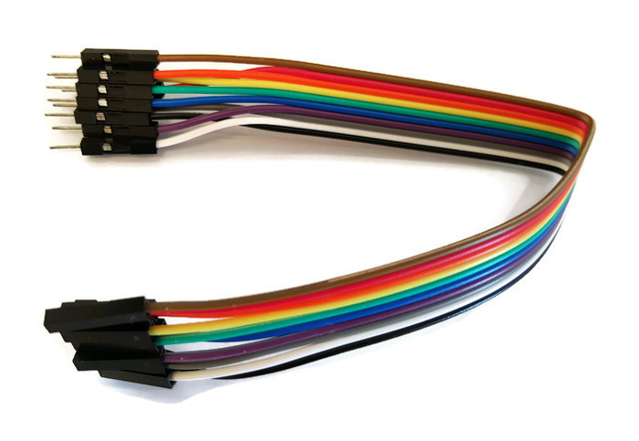

Break-free!
Enjoy an engaging game to break away from your stress.

Most people spend their time working on things. This increases the amount of stress they face. To break-free from that stress, they rely on digital media. This in turn results in them peeking into their phone constantly. Not only is this harmful for the users's eyesight and posture, but it does not really provide a way to break through the stress. We started by listing down vaious games that helped us "break-free" when there was no digital media.

Since most people are already under the influence of their phones, it was essential to ensure that the game was engaging enough to catch their attention. Thus, various existing games were analysed and broken down into its various components. This helped in identifying the key features of the game. You can see the process of making the game in detail under the 'process' section.

 

There were various materials and processes used in the making of the product. The key elements were the sensors which make the whole interaction with the product possible. These sensors were controlled by Arduino boards. The sensors included servo motors, stepper motors, LED display boards, buzzers, ultrasonic sensors and lots and lots of wires. Each element was individually coded and its interaction was given special attention. When these individual elements came togetehr, it formed the whole product and helped give the user an engaging experience.